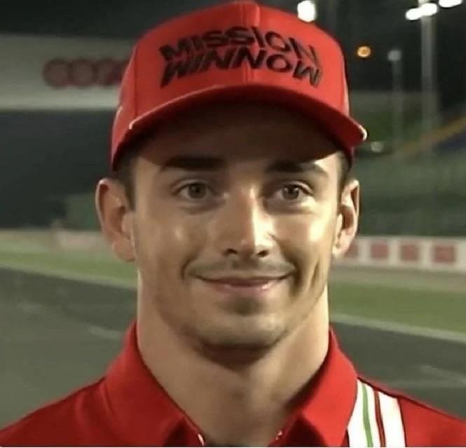
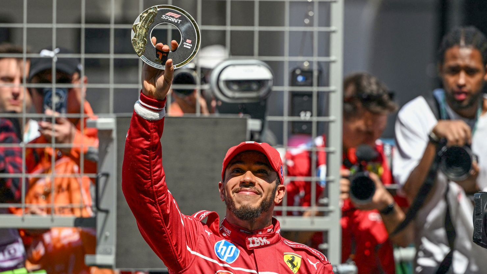

Scuderia Ferrari

Scuderia Ferrari HP
Team Principle: Frédéric Vasseur
Drivers: Charles Leclerc, Lewis Hamilton
Car: SF-2025
Reserve Drivers: Zhou Guanyu, Antonio Givonazzi
Academy Drivers: Maya Weug, Dino Beganovic, Rafael Camara, Aurelia Nobels, Tuukka Taponen
Charles Leclerc
Leclerc is one of the best drivers on the grid. He joined Ferrari in 2019, his second season, and has raced alongside Sebastian Vettel, Carlos Sainz and now Lewis Hmilton. He came in to the sport a promising young talent and he has delivered, however, he hasn't won the drivers yet. This year he has masively outperformed his teamate and is still fighting for podiums even in a diffucult car.
Race Engineer: Bryan Bozzi
Lewis Hamilton
Hamilton is a 7-time world champion who moved to Ferrari this season replacing Carlos Sainz. He is one of the greatest drivers of all time and is still performing at 40 years old. The start of his journey with Ferrari has not been smooth; despite a sprint win in China, he has been outperformed by his teamate and is struggling to extract enough out of the car. However, there is still high hopes for him at Ferrari and his 8th in red would be monumental for the sport.
Race Engineer: Riccardo Adami